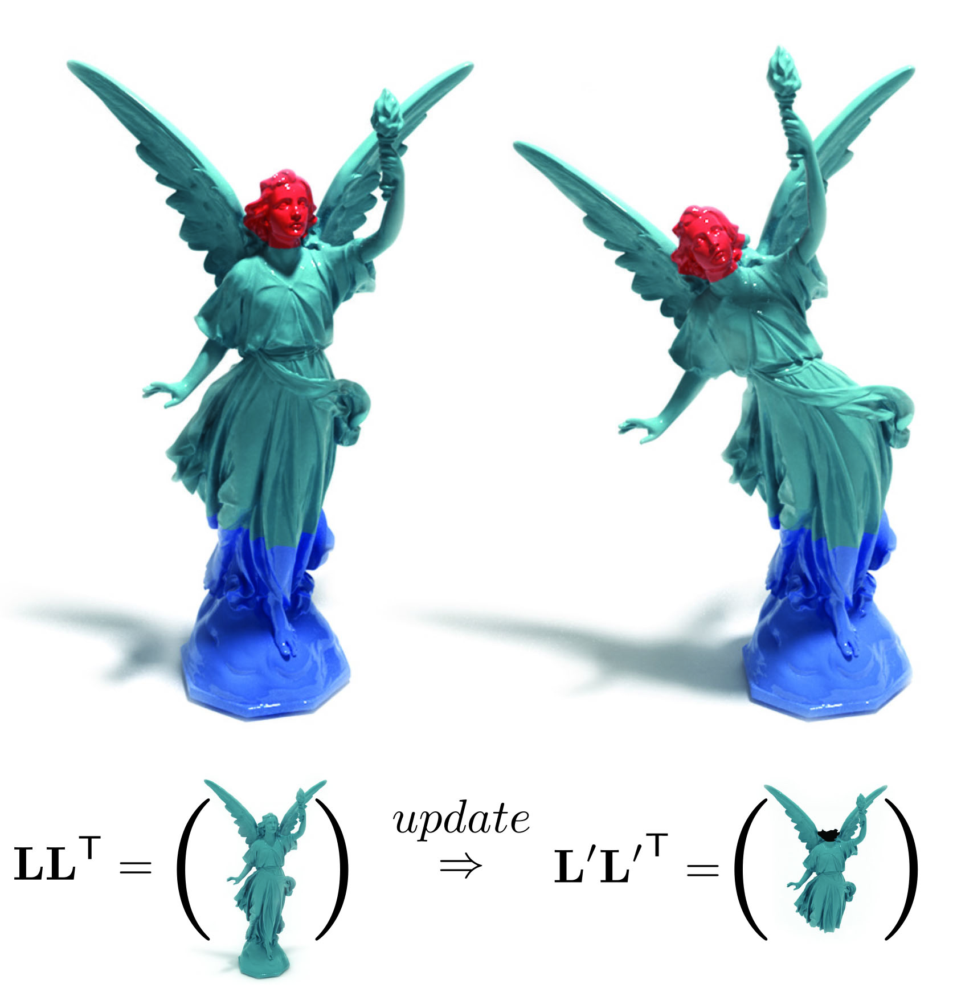
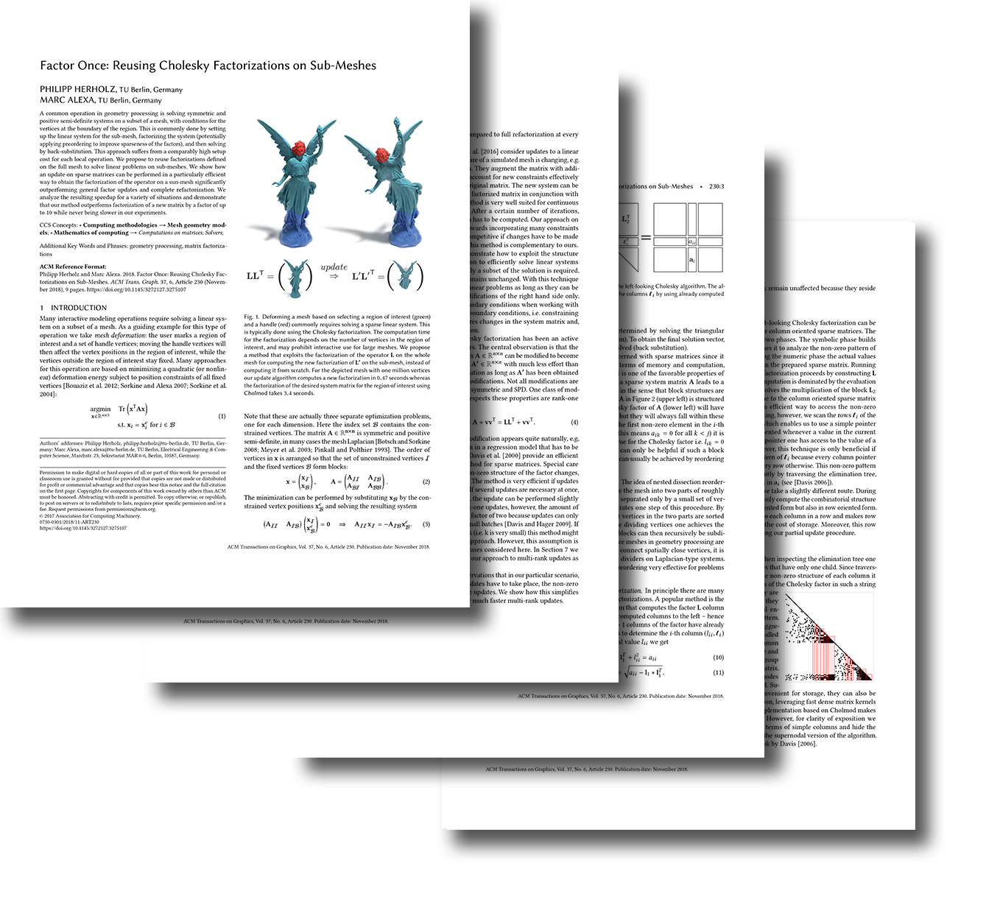
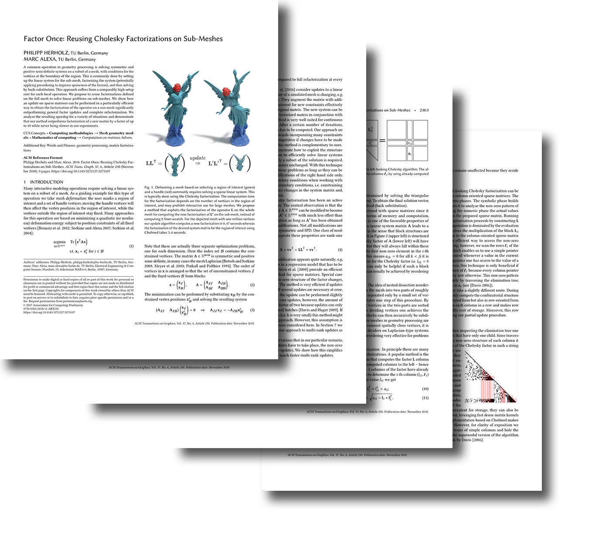

Factor Once: Reusing Cholesky
Factorizations on Sub-Meshes
Philipp Herholz
Marc Alexa
TU Berlin TU Berlin

Abstract
A common operation in geometry processing is solving symmetric and positive semi-definite systems on a subset of a mesh with conditions for the vertices at the boundary of the region.
This is commonly done by setting up the linear system for the sub-mesh, factorizing the system (potentially applying preordering to improve sparseness of the factors),
and then solving by back-substitution. This approach suffers from a comparably high setup cost for each local operation.
We propose to reuse factorizations defined on the full mesh to solve linear problems on sub-meshes.
We show how an update on sparse matrices can be performed in a particularly efficient way to obtain the factorization of the operator on a sun-mesh significantly outperforming general factor updates and complete refactorization.
We analyze the resulting speedup for a variety of situations and demonstrate that our method outperforms factorization of a new matrix by a factor of up to 10 while never being slower in our experiments.
Preprint (12MB)



Slides
 (?? MB)
(?? MB)
@Article{Herholz:2018:cup,
journal = {ACM Transaction on Graphics (Proc. of Siggraph Asia)},
title = {{Factor Once: Reusing Cholesky Factorizations on Sub-Meshes}},
author = {Philipp Herholz and Marc Alexa},
pages = {9},
volume= {37},
number= {6},
year = {2018},
DOI = {https://doi.org/10.1145/3272127.3275107},
}